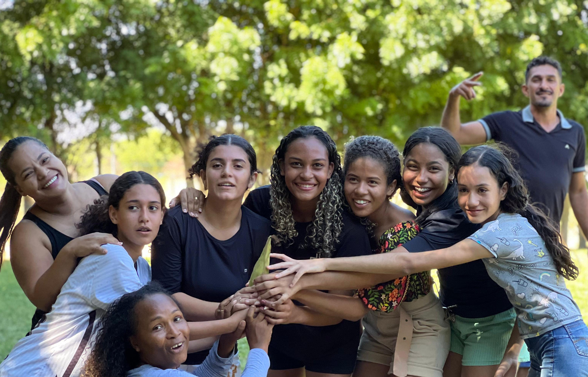
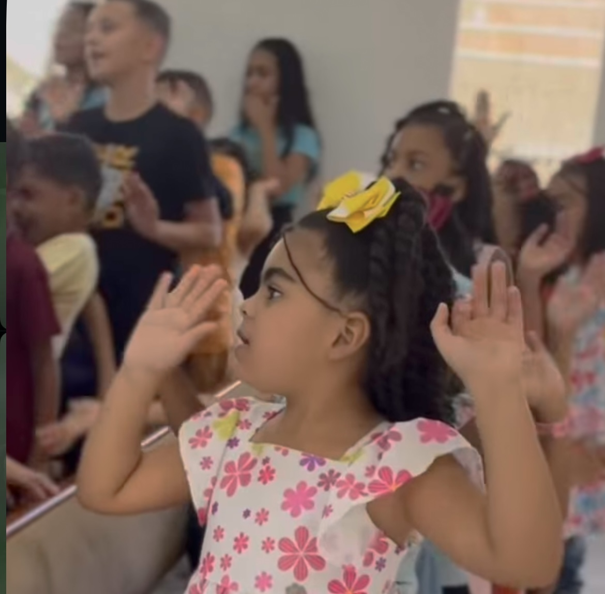
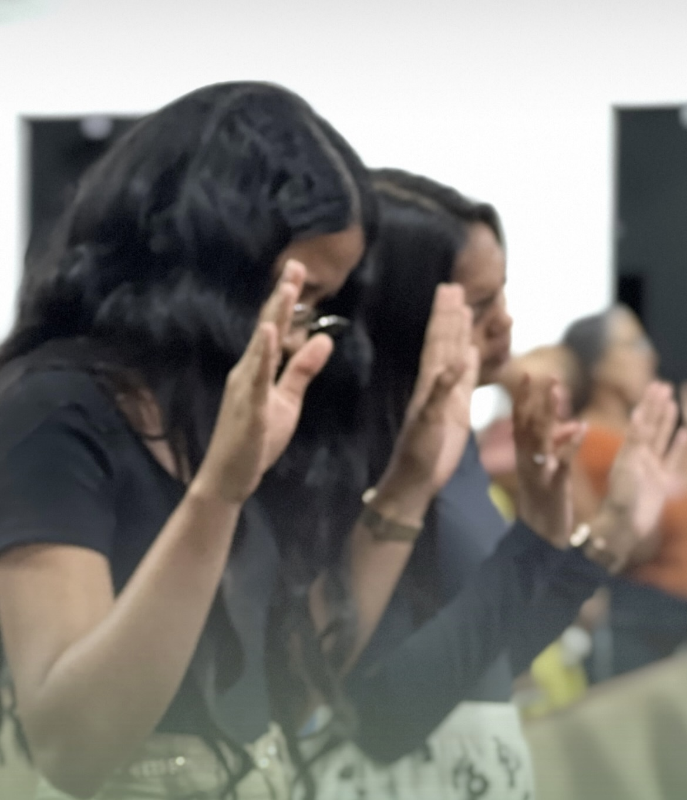
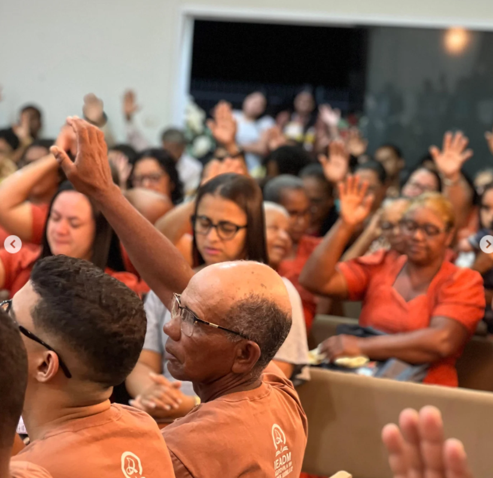
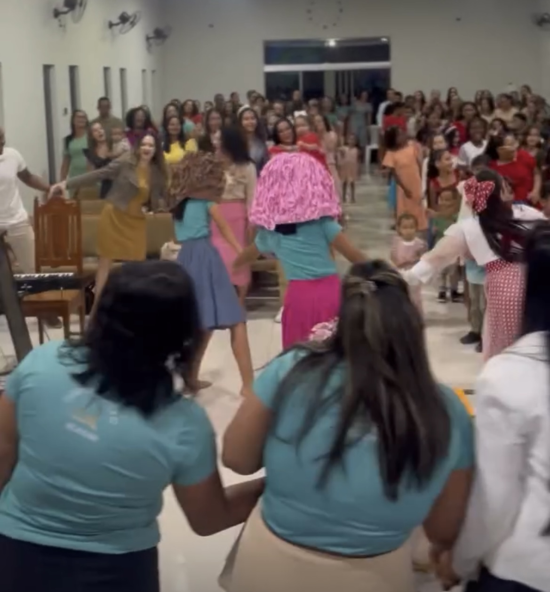
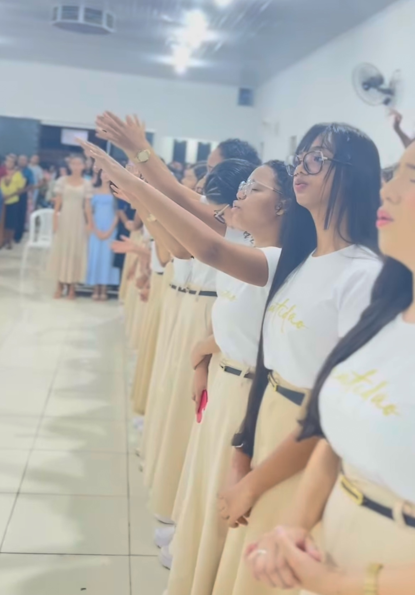
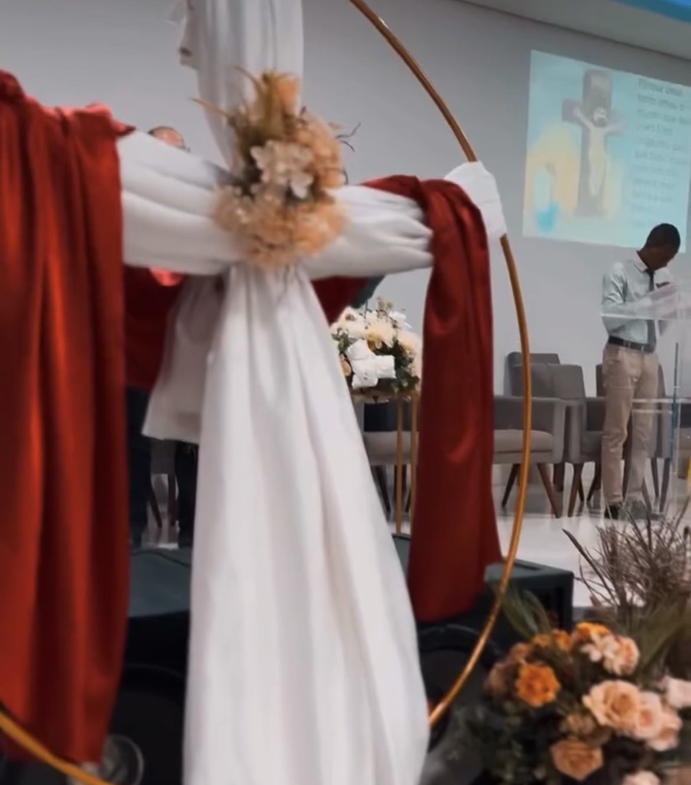

Agenda Anual 2025

Janeiro
Dia 31: Vigília (Ag. 06)

Fevereiro
Dia 08: Encontro da Umadep (Ag. 08)

Março
Dia 08: Encontro da Usadep (Ag. 06)

Abril
Dia 11, 12 e 13: Culto de Gratidão (Vila Formosa)

maio
Dia 10: Encontro da Usadep (Ag.08)
Dia 30 e 31: Culto de Gratidão (Ag. 04)

Junho
Dia 14 e 15: Passeio da Umadep
Dia 28: Encontro de Casais (Ag. 06)

Julho
Dia 19 e 20: EBF Ucadep (Ag. 06)
Dia 26: Festival (Ag. 04)

Agosto
Dia 15, 16 e 17: Culto de Gratidão (Ag. 06)

Setembro
Dia 06: Encontro da Ucadep
Dia 26, 27 e 28: Culto de Gratidão (Ag. 08)

Outubro
Dia 11 e 12: Congresso da Ucadep Ag. 02
Dia 25: Encontro da Umadep (Vila Formosa)

Novembro
Dia 06, 07 e 08: Culto de Gratidão (Ag. 02)
Dia 22: Dia do Homem (Ag. 04)
Dia 29: Dia do Músico (Ag. 02)

Dezembro
Dia 14: Batismo e Santa Ceia Reunida Ag. 02